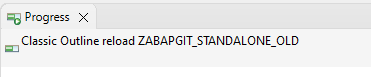

Frontend Now when there is a need to call SAP Backend, the call will be don in Eclipse Job, instead of separate Thread. This should lead to stop the situation of freezing Eclipse due to waiting for RFC call to finish.  Figure 1: Job calling the SAP RFC FM